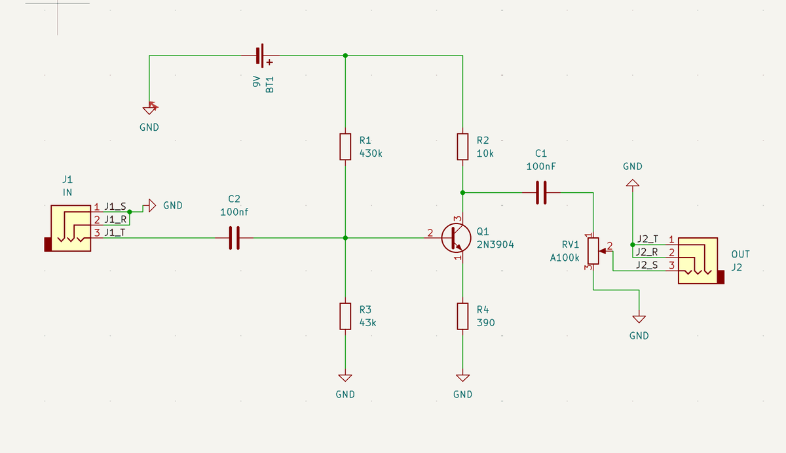
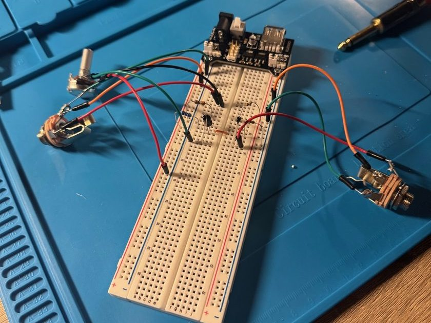

Circuit Design Details
The pedal is a single-transistor common-emitter booster that amplifies a guitar signal cleanly from a 9V supply, with a volume potentiometer on the output.
Key elements include:
- Amplifier Stage: A 2N3904 NPN transistor in a common-emitter configuration provides the clean gain.
- Bias Network: A 430k/43k voltage divider sets the transistor's operating point, with 10k collector and 390Ω emitter resistors.
- Coupling Capacitors: 100nF input and output capacitors block DC while passing the guitar signal.
- Volume Control: An A100k audio-taper potentiometer on the output sets the boost level.
- Off-board Wiring: The input/output jacks, potentiometer, and 9V battery connect to the board through pin headers.
The KiCad schematic below shows the full circuit, from the input jack through the amplifier stage to the volume pot and output jack.

Development Process
The pedal moved through three stages, from proof of concept to a manufactured board:
- Breadboard Prototype: Selected component values and verified the amplifier on a breadboard with real jacks, a potentiometer, and a powered supply rail before committing to a layout.
- KiCad Schematic: Captured the circuit in KiCad, assigned through-hole footprints, added pin headers for the off-board components, and resolved every Electrical Rules Check (ERC) warning.
- Printed PCB: Routed a 2-layer, 29.5×23mm board with a stitched ground pour, passed Design Rules Check (DRC) and a manufacturer's free DFM review, then exported Gerber and drill files and sent the board to fabrication (FR-4, HASL finish).
The breadboard prototype below was used to verify the circuit before schematic capture and layout.

Experience Gained
This project provided end-to-end experience taking an analog circuit from an idea on a breadboard to a professionally fabricated PCB.
Key skills developed include:
- Analog circuit design: transistor biasing, coupling, and audio signal flow.
- KiCad schematic capture, ERC/DRC verification, and footprint assignment.
- PCB layout with ground pours and stitching vias, Gerber/drill export, and working with fabrication houses on DFM checks and ordering.